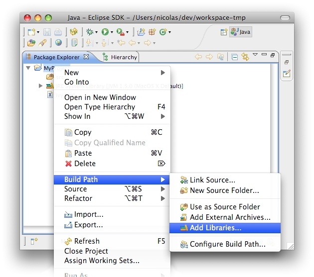
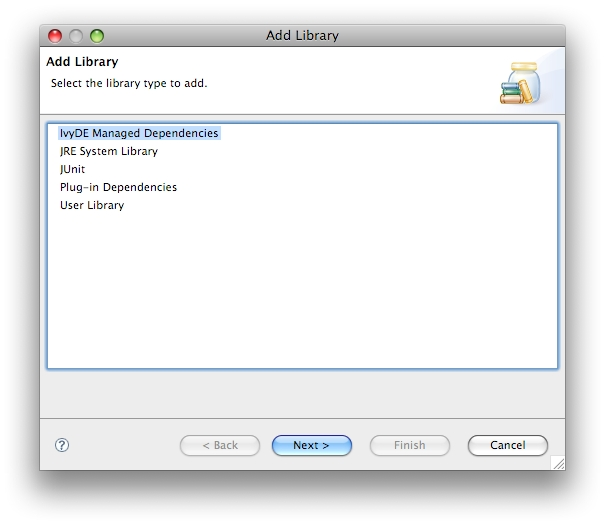
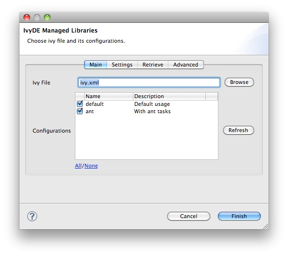
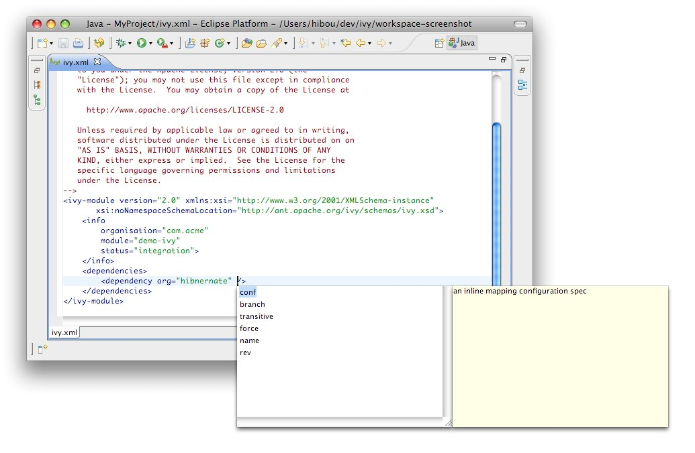
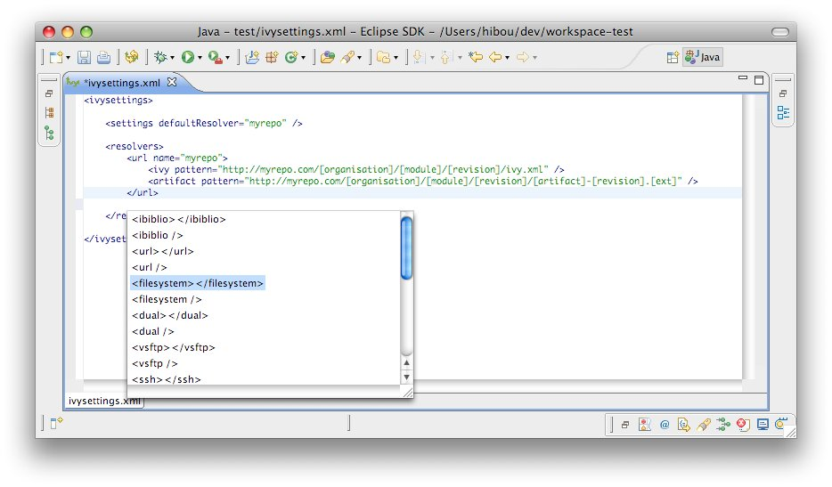

Documentation (trunk)
Apache IvyDE is the Eclipse plugin which integrates Apache Ivy's dependency management into Eclipse™. It lets you manage your dependencies declared in an ivy.xml in your Java Eclipse projects, or any other kind of project which needs dependency management.
A summary of the features it provides follows:
- Managed classpath container: automatic downloads, access to the Ivy "resolve" task from your IDE, and a feature allowing you to develop interdependent multi-module applications in one workspace.
- Ivy XML files editor: creation wizard, html preview and completion for Ivy XML tags, attributes, and attribute values.
- Ivy settings files editor: completion for XML tags, attributes, and attribute values.
- Ivy console: presents every log from Ivy to assist in debugging a failing resolve.
- Reverse Dependency Explorer: helps you work with conflicting dependencies amongst several projects.
Release Notes
- Release Annoucement
- What is Apache IvyDE?
- Status of this release
- Major Changes in this Release
- Committers and Contributors for this Release
- List of Changes in this Release
Release Annoucement
The Apache IvyDE project is pleased to announce its 2.2.0 beta release.Apache IvyDE is the Eclipse plugin which integrates Apache Ivy's dependency management into Eclipse. It lets you manage your dependencies declared in an ivy.xml in your Java Eclipse projects, or any other kind of project which needs dependency management. Apache IvyDE will contribute to the classpath of your Java project or you can make it retrieve your dependencies directly into your project. Last but not least Apache IvyDE offer editors of ivy.xml and ivysettings.xml files with completion. Get some preview here: http://ant.apache.org/ivy/ivyde/screenshots.html
Major changes in this release:
* a synchronous resolve job has been introduced to take into account projet's inter dependencies and avoid too many workspace build,
* resolved classpath can now be based on retrieved artifacts,
* IvyDE retrieve feature can now be use on non Java projets
Compatibility:
* this release is expected to work with every version of Ivy 2.1 or superior
* as for this release and the next ones, IvyDE now expects to be installed in Eclipse 3.4 or superior.
This release is considered as beta since the important changes in IvyDE resolve feature. We encourage our early users to test it and report us any issue they found.
A more detailed release notes can be read there:
http://ant.apache.org/ivy/ivyde/history/latest-milestone/release-notes.html
Issues should be reported to:
https://issues.apache.org/jira/browse/IVYDE
Download the 2.2.0 beta release at:
http://ant.apache.org/ivy/ivyde/download.cgi
Or use directly the Apache IvyDE's updatesite:
http://www.apache.org/dist/ant/ivyde/updatesite
More information can be found on the Apache IvyDE website:
http://ant.apache.org/ivy/ivyde/
What is Apache IvyDE?
Apache IvyDE is the Eclipse plugin which integrates Apache Ivy's dependency management into Eclipse™.Apache IvyDE lets you manage your dependencies declared in an ivy.xml in your Java Eclipse projects, or any other kind of project which needs dependency management. Apache IvyDE will contribute to the classpath of your Java project or you can make it retrieve your dependencies directly into your project. Last but not least Apache IvyDE offer editors of ivy.xml and ivysettings.xml files with completion. Get some preview here: http://ant.apache.org/ivy/ivyde/screenshots.html.
Status of this release
This release contains sevral major improvements along with some bug fixes. The majorimprovements are about the resolve scheduler and how retrieved artifact are handled.
Thus this release is considered as a beta one.
Major Changes in this Release
As for this release and the next ones, Apache IvyDE now expects to be installed in Eclipse 3.4 or superior.Apache IvyDE has now a synchronous job to launch resolve of dependencies on the projets. So
IvyDE will be able to order the resolve of the projects in the correct order regarding
their inter dependencies. And the immediate effect is that Eclipse get notified only
one time of a classpath change, and thus triggerin only one wrokspace build.
Apache IvyDE is now capable of having a classpath based on retrieved artifact rather than
on the cached ones.
The existing retrieve configuration are now considered "standonale" ones, as they
are independant of the classpath container. They can even now be part of non Java
project.
Committers and Contributors for this Release
Here is the list of people who have contributed source code and documentationto this release. Many thanks to all of them, and also to the whole IvyDE community
contributing ideas and feedback, and promoting the use of Apache IvyDE. The list would be too
long, but Apache IvyDE couldn't be what it is without you!
- Committers
- Maarten Coene
- Xavier Hanin
- Nicolas Lalevée
- Jon Schneider
- Gilles Scokart
- Contributors:
- Clint Burghduff
- Gregory Fernandez
- Jeffrey M. Metcalf
List of Changes in this Release
List of changes since Apache IvyDE 2.1.0:- NEW: Custom color in XML editors (IVYDE-73)
- NEW: support for retrieve configuration in non Java project
- NEW: an IvyDE classpath can now be retrieved (IVYDE-56)
- NEW: Add branch comparison to workspace resolver (IVYDE-234) (thanks to Jeffrey M. Metcalf)
- NEW: Look for ivysettings.xml file in project root copying the behavior of ivy ant task (IVYDE-258)
- NEW: IvyDE can now resolve in an offline mode, where Ivy use only the caches (Ivy 2.3 required)
- NEW: Explicit ordering of configurations (IVYDE-159)
- NEW: Open the ivy file on the double click in the reverse dependency explorer
- NEW: The ivysettings field editor now supports the variable ${ivyproject_loc} which is referencing the current project being resolved (IVYDE-247)
- IMPROVE: let IvyDE refresh workspace after a resolve (IVYDE-27) (thanks to Clint Burghduff)
- IMPROVE: IvyDE now resolve by batch, then preventing too many workspace build (IVYDE-177)
- IMPROVE: Shared Javadoc/Source attachments (IVYDE-230) (thanks to Gregory Fernandez)
- IMPROVE: WorkspaceResolver: deal with self-dependencies (IVYDE-240)
- IMPROVE: Impossible to resolve dependencies: missing diagnostics (IVYDE-233)
- FIX: Variable based path for ivysettings doesn't work it there are some spaces in the path (IVYDE-253)
- FIX: Triggers are not called (IVYDE-244)
- FIX: Missing ivysettings.xml can make the classpath container config to change (IVYDE-248)
https://issues.apache.org/jira/browse/ivyde
License
Compatibility
Upgrading/Downgrading
This version is compatible with every earlier Apache release (since 2.0.0.alpha1). Any upgrade of Apache IvyDE should work without any worries.The reverse is not true, downgrading is not supported and may break your configuration
Dependency on Apache Ivy
Apache IvyDE expects to be used with a version 2.1 or superior of Apache Ivy.Eclipse™ integration
Apache IvyDE has been maintained to be compatible with Eclipse 3.4, 3.5 and 3.6.JVM compability
Apache IvyDE has been kept compatible with Java 1.4.Installation
Install the last release via Internet
For most user who have access to the internet it is simpler to install the latest release from the Apache IvyDE updatesite. So just look out there:http://ant.apache.org/ivy/ivyde/download.cgi
Manual install
Install Apache IvyDE
So you should have the zip distribution of Apache IvyDE in which you should find these files:- features/org.apache.ivyde.feature_2.1.0.XXXX.jar
- plugins/org.apache.ivyde.eclipse_2.1.0.XXXX.jar
cp features/* $ECLIPSE_HOME/features
cp plugins/* $ECLIPSE_HOME/plugins
Install the latest Apache Ivy bundle
Get the latest Apache Ivy feature and bundle for the updatesite:- the features folder
- the plugins folder
Restart Eclipse
After installing manually your plugins, you have to restart your Eclipse to have it take into account the changes. It is recommended to restart it with the -clean option on the command line.Classpath Container
The IvyDE classpath container will help you manage the classpath of your Eclipse™ projects, based on the dependencies declared in Ivy files found in your projects.
Some of the tasks that can be performed on the container include:
- Create a container
- Edit its setup
- Launch a resolve of the dependencies
- Retrieve the dependencies in your project
- Resolve dependencies within the Eclipse workspace
- Launch software or unit tests with a classpath managed by IvyDE
- Use IvyDE with maven pom.xml
- Use IvyDE in concert with WTP
Create a container
First, locate an ivy.xml file or a maven pom.xml ready to be used to build a classpath. Also, if necessary, locate a supporting ivysettings.xml.
Fast creation
For most of the projects, the ivy.xml file (or the pom.xml) is in the java project. So you can just right click on the ivy.xml and select "Add Ivy Library..." and you can directly access the prefilled setup of the IvyDE classpath container
Standard creation
The standard way to add the IvyDE classpath container is to manipulate the Eclipse™'s "Build Path":- Select the project in which you want to create an IvyDE classpath container and open the "Add Libraries" form of Eclipse (in package Explorer, in the context menu of your project choose : [Build Path]/[Add Libraries]).
 - Select the "IvyDE Managed Dependencies" item.
 - Select an ivy.xml file or a maven pom.xml and the desired configurations.


Edit the classpath
During the life of your project, you can change the ivy.xml file or maven pom.xml and change its configuration.
These properties can be accessed by the context menu of the IvyDE classpath container:
This is particularly useful when Eclipse hides the empty classpath containers (since Eclipse 3.3). When the container is empty, this is the only way to trigger a resolve on this project.
Launching resolve
You can explicitly ask for Ivy dependency resolution from your classpath container.
This command will invoke the "resolve" Ivy task and update your classpath container.
There is also a "refresh" action: this action is similar to the resolve one, but does not perform a full resolve if a report already exists in the cache. This is particularly useful if you work with Apache Ant and a command line so that you avoid two full resolves. It is also the default action performed on classpath containers when the Eclipse workspace is opened (Windows > Preferences > Ivy), in effect restoring the classpath container to its state prior to the last closing of the workspace if no other action is performed against the ivy.xml in the meantime.
You can also trigger a resolve (not a refresh!) of every IvyDE classpath container in the workspace via the button in the tool bar of Eclipse.
And to launch a resolve on a specified selection of projects:
- Select the projects you want to resolve in the package view,
- Open the context menu with a right click
- Choose Ivy > Resolve
Retrieve dependencies
It is possible to make Apache IvyDE copy resolved dependencies into your project: a retrieve of the dependencies can be triggered on each resolve of the classpath container.
To enable this behavior, enter the classpath container configuration panel, and select the second tab, "Retrieve".
The Delete old retrieved artifacts check box will cause IvyDE to clean the output directory before each retrieve. Note that any other artifacts other than those previously retrieved by IvyDE in this container will be deleted as well if this option is selected.
Finally, you can select which Configurations should be resolved and you can select which Types of artifacts should actually be retrieved. In both fields, * means all.
Jar mapping
Apache IvyDE will resolve the dependencies and artifacts you are requiring. Then with the pool of resolved artifacts, it has to decide which is a binary jar, which contains sources, and which contains javadocs. And also how to bind one on each other.
Finding jars types
There are three types of jars handled by Eclipse™:- the binary jars: they will be added to the classpath in oder to compile and run; they contain the .class files.
- the source jars/zip: they will be bound to the binary one to browse dependency sources; they are basically a zip of .java files
- the javadoc jars/zip: they will be bound to the binary one to browse the API documentation of the dependencies of your project; they are a zip of .html files respectin a layout produced by javadoc.
For the sources, it is relying on the "Sources types".
For the javadocs, it is relying on the "Javadocs types".
Binding the jars
The second step is to bind a source artifact with a binary one. Apache IvyDE has the folowing algorithm:- first if a binary jar has the same artifact name than a source one, there are bound together.
- if none matched, then IvyDE search for sources which have one of the suffix specified in "Sources suffixes".
- mylib.jar (type=source)
- mylib-source.jar (type=source)
- mylib-sources.jar (type=source)
- mylib-src.jar (type=source)
Same apply for javadocs with respectively "Javadocs suffixes".
Clean the caches
Apache IvyDE has the ability to clean the various types of Ivy caches.
On a configured IvyDE classpath container, open the context menu and select the Clean Ivy cache entry. A menu of configured caches will be shown.
- All: will clean every cache
- Resolution cache: will clean only the cache of the resolution report
- Every repository cache: will clean every cache dedicated to the artifacts
- Cache 'xxxxxx': will clean only the cache with the specified name
Reload settings
In case you have selected the "Reload the settings only on demand" option in the preferences, you can manually reload the settings via the context menu on the classpath container.
- Reloading the settings will automatically launch a resolve
- Reloading the settings in a project will not make other projects reload their settings even if they use the same settings file
Resolve in workspace
Some projects are composed of mulpliple modules. Often, these modules have dependencies between them, dependencies managed by Apache Ivy (of course!).
Eclipse is capable of calculating the workspace's build order according to dependencies between projects. To leverage this advantage, Apache IvyDE has the ability to add a project reference to a dependency located in the workspace in place of downloading its published artifact(s) from the repository. In this way, developers can develop multi-module applications, and test the interaction between these modules, before building and publishing artifacts to the repository.
Consider a multi-module application with a considerable amount of code in each of several projects. Many developers have experienced the delays involved in waiting for Eclipse™ to build code across all of these projects even though development is only being conducted in one isolated part of the application (maybe just one or two projects). If the latest published artifact in the Ivy repository has the same source code as a module that the developer is not currently working on, simply closing that project in the Eclipse workspace and resolving dependencies on dependent projects that would resolve that artifact speeds the compilation process considerably.
First, each application module should be separate a project in Eclipse, and each of these projects should have a configured IvyDE classpath container.
To enable resolution in the workspace, go to the advanced configuration panel of the classpath container and select Resolve dependencies in workspace.
- The org and name
- If there is a rev specified, dependencies should specify the appropriate range
- If there is no rev specified, only dependencies with lastest will match
- The status should match the required one: a dependency with latest.integration will only match if there is status="interation" in the info of the dependant module
| A dependency on B | B declared revision | result |
|---|---|---|
| latest.integration | 1.2 | B wired on A |
| 1.2 | 1.2 | B wired on A |
| [1.2,1.3) | 1.2 | B wired on A |
| 1.0 | 1.2 | no project wiring |
| latest.integration | none | B wired on A |
| 1.2 | none | B wired on A |
| [1.2,1.3) | none | B wired on A |
| latest.integration | $version | no project wiring |
| 1.2 | $version | no project wiring |
| [1.2,1.3) | $version | no project wiring |
- see the defaultResolveMode attribute of settings in the ivysettings.
- see the resolveMode attribute of module in the ivysettings.
Launch configuration
The IvyDE classpath container can also be used in the launch configuration, run or debug.
Default behavior
By default, the container will be used because it is included in the default classpath of you project. This is the configuration that you implicitly have when you do a "Run As..." on a Java class. The container you see in the launch classpath is the same as the one you have in your project in the package explorer.
Managing the classpath manually
When you do need to have finer-grained control over which configurations are visible to the runtime classpath, it is possible to edit the runtime classpath manually.By creating a launch configuration, you will get the default classpath as described above. So the first step is to remove it. Most likely, you will want to re-add your project in the user entries. Then to add an IvyDE container, choose "Advanced":


To enable the resolve before each launch, go into the "Advanced" tab and select "Resolve before launch".

Use with maven poms
If you want to use a Apache Maven™ pom.xml instead of an ivy.xml file, you can select a pom file in the configuration options of the IvyDE classpath.
When a maven pom is selected, the configurations list is updated with all maven scopes.
Both examples below are a good illustration of the simplicity of using maven poms in Apache IvyDE:
Maven1 Sample
This sample presents a simple use case involving a maven pom and the IvyDE classpath container. We are going to create an Eclipse™ project on commons-httpclient sources.- Download the commons httpclient sources
- Unzip this file (c:/tmp/commons-httpclient/)
- Create a new Eclipse java project based on the unzipped sources (c:/tmp/commons-httpclient/)
Note: your project willnot compile: some imports cannot be resolved.

Maven2 Sample
This sample demonstrates how the IvyDE classpath container on a Apache Maven 2 pom can handle transitive dependencies.- Create a new empty java project in Eclipse.
- In your project, create an ivysettings.xml file:
<ivysettings>Using the m2compatible attribute, you can benefit from Apache Maven 2 repository compatibility.
<conf defaultResolver="ibiblio"/>
<resolvers>
<ibiblio name="ibiblio" />
</resolvers>
</ivysettings>
- In your project, create a pom.xml file:
<project>- On the pom.xml file, open the context menu and click on "Add Ivy Library...":
<modelVersion>4.0.0</modelVersion>
<groupId>com.mycompany</groupId>
<artifactId>myproject</artifactId>
<version>1.0-SNAPSHOT</version>
<dependencies>
<dependency>
<groupId>commons-httpclient</groupId>
<artifactId>commons-httpclient</artifactId>
<version>3.0</version>
</dependency>
</dependencies>
</project>
- Select the configurations compile and runtime


WTP integration
WTP refers to the Web Tools Platform project from the Eclipse Foundation which allows Eclipse™ users to easily develop, launch and debug web applications. Apache IvyDE works with WTP 2.0+ (Eclipse 3.3+).
In the properties of your project configured to use WTP, there is a section titled "Java EE Module Dependencies". In this section you will find the IvyDE classpath container listed, usually with the name "ivy.xml [*]". Select it and dependencies found in the IvyDE classpath container will be deployed as well.
IBM™ Rational Application Developer (RAD™) 7.5.3+
Users of RAD 7.5.3 will notice that the classpath container is not listed in the table. RAD prevents the deployment of classpath containers by default. To allow this behavior, selection Windows > Preferences > Java EE. Check "Allow loose classpath module dependencies". RAD will present you with a warning message. To enable the behavior, you need to check the option again in the popup and click Yes.Note: due to a bug in RAD 7.5.3, this IBM specific property is not persisted when we close the workbench and reopen it. To work around this:
- Export RSA preferences ( File > Export > General > Preferences)
- Open the exported .epf file and replace
/instance/org.eclipse.jst.j2ee/org.eclipse.jst.j2ee.preferences.allowClasspathDep=false
with
/instance/org.eclipse.jst.j2ee/org.eclipse.jst.j2ee.preferences.allowClasspathDep=true - Load the modified .epf
Ivy file editor
Apache IvyDE comes with an Ivy file editor that provides an editor that performs code completion for Ivy xml tags based on the real-time state of your repository. It also packs with an Ivy file creation wizard and HTML preview.
Creation Wizard
To use the creation wizard, choose File > New > Other > IvyDE > Ivy file in the Eclipse menu (Ctrl+N by default). Select it and click Next.

- Wizard fields:
- Container: you must select a target project. (This is already set if you access the wizard through the context menu on your project root folder).
- File name: the Ivy file name (ivy.xml by default).
- Organisation: the component owner name. (your company name or the company that provides the component if you are writing an ivy.xml file for 3rd party jars). Note that this value can be set in the Ivy preference page.
- Module name: the component name.
- Status: the status of the project. (integration by default since we have just created its ivy file. Please refer to the Ivy documentation for more details).
Ivy Editor

Completion comes with contextual help. The completion popup is displayed when through the CTRL + SPACE shortcut.
Available completions:
- XML structure: Allows you quickly to insert valid tags at the right place. If the tag can have nested children, both notations, simple tag and open tag, are proposed.

- Tag attributes: When your cursor is placed in a tag bracket, the completion shows available attributes for the enclosing tag.
 - Attributes values: When your cursor is placed inside the quotes of an attribute value, the completion shows available values for the matching attribute.
- Available value completion
- info: organisation (preference based), module (Eclipse project name),
- info/ivyauthor: name (preference based), url (pref based)
- info/description: homepage (pref based)
- info/license: name
- info/repository: name (the other attributes depend on it), url, ivys, pattern, artifacts
- configurations/conf: visibility, deprecated, extends
- publications/artifact: type, conf, ext
- dependencies/dependency: org, name, rev are resolved thanks to Ivy using the ivyconf set in the project Ivy preference page. If not set to "default" Ivy uses its defaults resolvers configuration (ie Ivyrep + ibiblio), and if these are not set Ivy uses the ivyconf set in the Eclipse Ivy preference page. conf values are computed from the current ivy.xml file and the dependency ivy.xml file if any.

Ivy settings editor
IvyDE provides an editor of ivysettings.xml files. It provides completion on all tag and attribute names.
Available completions:
- XML structure: Allows you to quickly to insert valid tags in the right place. If the tag can have nested childrenm, both notations, simple tag and open tag, are proposed.
 - Tag attributes: When your cursor is placed inside a tag bracket, the completion shows available attributes for the enclosing tag.

Eclipse global preferences
Apache IvyDE maintains a global configuration, which controls the behaviour of every Ivy instance in every project in the workspace. This global configuration can be overrided in each project.
The global configuration can be found in the preferences of Eclipse (menu Window > Preferences for Windows and Linux users, Eclipse > Preferences for mac users), and select the item Ivy.
Global Ivy preferences
TODO: SCREENSHOT NOT UP TO DATE- On Eclipse startup: Specifies what Apache IvyDE should do in every project containing an IvyDE managed classpath container when Eclipse™ is starting up.
- On Ivy file change: Controls whether a resolve is performed each time Eclipse detects a change on an ivy.xml file configured by an IvyDE container via a save in the editor, a refresh, or a team/update.
- Organisation: Your company name for Ivy editor completion.
- Organisation URL: Your company web site url for Ivy editor completion.
Classpath configuration
TODO: SCREENSHOT NOT UP TO DATE
- Resolve dependencies in workpace: Apache IvyDE allows Ivy dependencies between projects in the workspace to be realized through project references rather than jars from the repository. See the documentation for further information on this feature.
- Resolve before launch: an IvyDE container can be used in the classpath of a launch configuration, and the container can be resolved on each launch. See the documentation about launch configurations for further information on this feature.
- Order of the classpath entries: By default, the classpath container entries are ordered by order of declaration in the ivy.xml. When there are many entries, it can be useful to have them ordered lexically for enhanced readability.
- Accepted types: A comma separated list of extensions which will make IvyDE add the artifact to the classpath
- Sources types: A comma separated list of Ivy "type" names which should be considered sources.
- Sources suffixes: a comma separated list of suffixes which will make IvyDE attach as source the artifact with the suffix to the artifact without the suffix. For instance, "commons-lang-sources.jar" will be attached as source to "commons-lang.jar" with the default value.
- Javadoc types: same as sources types but for javadocs
- Javadoc suffixes: same as sources suffixes but for javadocs
Retrieve setup
TODO: SCREENSHOT NOT UP TO DATE-
If checked, a retrieve job will be triggered after each the resolve.
- Retrieve pattern: The pattern to use for the retrieve. Check Ivy documentation for pattern explanation.
- Delete old retrieve artifacts: On each retrieve, the previously retrieved libraries will be removed (similar to the sync argument in the Ant task).
- Retrieve configurations: The configurations to retrieve (a comma separated list)
- Retrieve types: The types of artifact to retrieve (a comma separated list)
Ivy settings
TODO: SCREENSHOT NOT UP TO DATE- Reload the settings only on demand: By default, Apache IvyDE will parse the ivy settings file each times it is needed (each resolve, refresh, clean cache or completion in the ivy editor). For remote ivysettings this can slow the UI dramatically, so it is possible to make IvyDE keep the settings in a cache and only reload them via the context menu on the container).
- Ivy settings path: The path to your ivy settings file. Leave it blank to use Ivy default resolvers. See also the documentation about Eclipse variables.
- Property files: This is a comma separated list of Java properties files to be loaded along with the settings.
Workspace resolver
TODO: SCREENSHOT NOT UP TO DATE
- Closing trigger resolve: Closing a project which has the workspace resolver enabled will trigger a resolve on every project that depends on it.
- Opening trigger resolve: When a project is opened, IvyDE will trigger the resolve of every other project which has the workspace resolver enabled.
- Ignore version when resolving workspace projects: This option forces the workspace resolver to ignore the version of a module specified in an ivy.xml if a project containing an Ivy file with that module organization and name is found in the workspace, instead substituting a project reference. This may have unintended consequences.
XML Editor
TODO: SCREENSHOT
Eclipse variables
Eclipse contains a string substitution mecanism. This feature allows you to specify a path location that can be shared between developers.
Apache IvyDE uses it to find the ivysettings.xml and properties files in both the glogal preference page and the project specific preference page.
Using the "Workspace..." button will open a window to choose a file in the workspace. Apache IvyDE will automatically fill the field with the proper variable.
Finally, you can choose to depend on the Eclipse variable system by clicking on "Variable...".

Previously, Apache IvyDE supported the project://projectName/path/to/file.ext protocol. It sill does, but references of this style will be automatically converted in the saved settings to the Eclipse variable way of defining this path: ${workspace_loc:projectName/path/to/file.ext}.
Ivy Console
The Ivy console provides the Ivy working traces that are visible in the command console. This view can be useful for understanding what Apache Ivy and Apache IvyDE are doing under the covers.
The Ivy Console can be accessed within your Eclipse Console view, by selecting the "Ivy Console" item.

The colors in the console correspond to the different log levels. Here is the default mapping:
- Debug: light blue
- Verbose: green
- Info: black
- Warn: orange
- Error: red
Eclipse's Ant integration
Most Eclipse™ distributions include a plugin to launch Apache Ant build files. The provided Apache Ant distribution is a standard distribution of Ant that doesn't include Apache Ivy. You may wish to run Ivy targets against Eclipse's Ant distribution.
Configure Ant classpath
For now, Apache IvyDE doesn't contribute to the Ant classpath of the Eclipse plugin, so you will have to do it manually.In the global preference page of the Ant runtime, click on Add External JARs...
Run Apache Ivy targets
Create an Ant build file and declare the Ivy targets with:
<taskdef resource="org/apache/ivy/ant/antlib.xml" uri="antlib:org.apache.ivy.ant" />
And don't forgot to declare the namespace xmlns:ivy="antlib:org.apache.ivy.ant".After the taskdefs have been added, you will have code completion on Ivy tasks:

Reverse Dependency Explorer
Introduction
When working with multiple projects in a workspace that represent the whole or part of a larger application, you may want to simultaneously change the revisions of dependencies in several Ivy files to a single new revision all at the same time (notwithstanding the eviction mechanism inherent to Apache Ivy).At other times it is instructive just to see what dependencies are being utilized by projects in the workspace by revision without having to dig into each project and look at each individual module descriptor.
The Reverse Dependency Explorer turns the dependency tree upside-down, exploring the workspace by organization, module, and revision and providing a mechanism to synchronize revisions across projects/classpath containers.
Consider the following workspace, with three projects, all of which have an ivy.xml file at their project root. Each of these Ivy files has an associated IvyDE managed classpath container.
Right clicking on any (or all) of the projects and selecting Ivy > Reverse Dependency Explorer opens the view. The explorer displays a tree structure with an item for each organization/module pair. The third column lists all of the revisions of this pair for the selected projects. Expanding a tree item, you can see the module revision that a given Ivy classpath container depends on (if at all). Note that the view only shows direct dependencies and no transitive dependencies.
Organization/module pairs that have conflicting revisions are highlighted in red (junit in the above example). Note that in the above example, though the revisions do not match, these two revision attributes may actually resolve to the same artifact, depending on what is available in the repository. The view does not attempt to perform a resolve and match the resolved artifacts. It simply compares the text of the attributes.
Synchronizing revisions
To synchronize revisions, click in the column and row of the item you want to change and type in the new revision. The item should be highlighted green to indicate that it is tagged for synchronization. Click the synchronize button as shown to save your changes.Developer doc
Adding new features or fixing bugs needs community involvement.
Here you will find the basics for how to get involved:
Building
This page describes how to build the Apache IvyDE plugin from the source. The build is based on the Eclipse™ build system so it requires an Eclipse install. You also need to have an Ivy bundle installed.
Setup of the build
Eclipse installation
You need first an Eclipse install which contains the PDE plugins (by default included in the "SDK" and "Classic" versions). We will refer to the eclipse installation path in the documentation as $ECLIPSE_HOME. In that $ECLIPSE_HOME folder you should have the plugins and features folders.It is recommended to have an eclipse installation dedicated to the build. So you will be able to have better control over the Ivy bundle installed there. And as the build clean the internal cache of Eclipse, running an eclipse and building with the same instance might raise some troubleshootings in the IDE.
Lots of ant target depends on that Eclipse installation, so they need a baseLocation property to be defined. Note that you can avoid specifying that property in each command line by having a local.build.properties file which contains somethink like:
baseLocation=/home/me/tools/eclipse-3.4
The Apache Ivy bundle
The IvyDE plugins depends on the Apache Ivy 2.0 OSGi bundle. So the Ivy bundle have to be installed in the Eclipse installation before starting the build. An Ant target will accomplished that task quite automatically. Inline help will be displayed when no property is specified:ant install-ivyNote: due to an old bug in the build script of Ivy, the OSGi version of Ivy is "0.0.0" for every version older than the 2.0.0-RC1. So older version than 2.0.0-RC1 is not supported.
Building
First somehow you got some sources, for instance from the ASF subversion repository:svn co https://svn.apache.org/repos/asf/ant/ivy/ivyde/trunk ivyde-trunkor get directly the released sources from the distribution.
And go into the root folder of the sources. In that folder you should see the builder, org.apache.ivyde.eclipse and org.apache.ivyde.feature folders.
And run the build:
ant build -DbaseLocation=$ECLIPSE_HOMEThen in the created directory "work" you will find a directory (something like 2.0.0.alpha1-200804171513) in which you will find the zip archive ready to be unzipped in an Eclipse install.
Install
After a successful build you should have a zip file at dist/org.apache.ivyde.feature-$VERSION.zip. The zip file contains the "plugins" and "features" folders ready to be unzipped in an Eclipse install. So here is the process:cd $ECLIPSE_HOMEThen start your Eclipse and enjoy !
unzip ...../dist/org.apache.ivyde.feature-$VERSION.zip
Releasing
This documentation is defining every steps that needs to be accomplished when releasing Apache IvyDE.
In this doc, the released version is denoted as $VERSION, so it HAVE to be replaced in the command line argument accordingly. There is also some $LOGIN which is referencing your login on the Apache machines.
Prepare
Jira
First in Jira make sure that no more issues are opened for the target release.Release notes
Make sure the release notes and the annoucement are up to date. Look at doc/release-notes.html.Release branch
Some modifications of the branch are need to do the release. So a new branch is needed:svn copy https://svn.apache.org/repos/asf/ant/ivy/ivyde/trunk \and then checkout it:
https://svn.apache.org/repos/asf/ant/ivy/ivyde/branches/$VERSION \
-m "Creating a release branch for IvyDE $VERSION"
svn co https://svn.apache.org/repos/asf/ant/ivy/ivyde/branches/$VERSION ivyde-$VERSION
Documentation release
The documentation have to specify the correct version number:In the files:
- doc/template.html
<title>${title} | Apache IvyDE $VERSION Documentation</title>
Commit your changes
Don't forget to commit the changes you've done into the release branch.Building
Make sure you have a proper working copy with a svn status. You should have no modification.Then launch the build:
ant /release clean dist -DbaseLocation=/home/me/...../eclipse/And sign the artifacts:
./signArtifacts.shThen it is time to tag the release as soon as you are happy with your artifacts:
svn copy https://svn.apache.org/repos/asf/ant/ivy/ivyde/branches/$VERSION \And don't forget to set the svn:external on doc/xooki to a fixed revision. Edit the svn:external property on the folder doc/xooki in the tag and set it to the revision of the commit of the tag. It should look like:
https://svn.apache.org/repos/asf/ant/ivy/ivyde/tags/$VERSION \
-m "Tag IvyDE release $VERSION"
xooki -r790212 https://svn.apache.org/repos/asf/ant/ivy/site/xooki/And commit that modification.
Prepare the updatesite
The instructions to build the updatesite are there:http://ant.apache.org/ivy/history/trunk/dev/updatesite.html
Vote for the released artifacts
It is recommended to publish the distribution artifacts and the updatesite in your public_html on people.apache.org directory so not only committers can test it.On people.apache.org, create your "staging" directory:
mkdir ~/public_html/ivyde-$VERSION/And then the copy:
scp dist/* $LOGIN@people.apache.org:/home/$LOGIN/public_html/ivyde-$VERSION/It is recommended to also deploy a staging updatesite there. See that page to know how to proceed.
And launch the vote on the ant-dev mailing list:
Subject: [VOTE] IvyDE $VERSION ReleaseNote: this page is defining when and how a release can be accepted.
I have built a release candidate for Apache IvyDE $VERSION
You can download the distribution from this URL: http://people.apache.org/~$LOGIN/ivyde-$VERSION/
And a staging update site has been setup there: http://people.apache.org/~$LOGIN/staging/updatesite
Do you vote for the release of these binaries?
[ ] Yes
[ ] No
Regards,
$ME, IvyDE $VERSION release manager
Deployment
Publish the artifacts
The binaries have to be pushed with their signatures and checksums in the apache dist directory. On people.apache.org:cp -R ~/public_html/ivyde-$VERSION /www/www.apache.org/dist/ant/ivyde/$VERSION
Deploy the updatesite
Follow the instructions of that page: http://ant.apache.org/ivy/history/latest-milestone/dev/updatesite.html#deploymentAnnoucement
The annoucement should have been already prepared and reviewed by other committers. Its content can be found in doc/release-notes.html.With that content, send a mail to announce@apache.org, ivy-user@ant.apache.org and dev@ant.apache.org with the title "[ANNOUNCE] Apache IvyDE $VERSION released", and with your apache email as sender (announce@ requires it).
Update the documentation
Update the table of content
The table of content needs to be updated so that the last documentation point to that new release.First we need to update the external links. In svn/site/ivyde/history:
svn pe svn:externals .And:
- update latest-milestone:
latest-milestone https://svn.apache.org/repos/asf/ant/ivy/ivyde/tags/$VERSION/doc
- add an entry:
$VERSION https://svn.apache.org/repos/asf/ant/ivy/ivyde/tags/$VERSION/doc
- add the following data to the correct abstract node:
{
"title":"$VERSION",
"url":"http://ant.apache.org/ivy/ivyde/history/$VERSION/index.html"
} - update the title of the latest-milestone history entry:
"title":"Documentation ($VERSION)"
Update the download page
In the page svn/site/ivyde/download.html change every reference of the old version to the new one.Deploy
All site editing being done, commit your changes.And now let's generate the site and deploy it:
- generate the part of the site for the new version:
- generate the website with the new toc:
- you should verify that the site generated in target is OK. And once your happy with it, commit the changes in target (some svn add might be needed !)
- deploy the website: go on people.apache.org and svn up /www/ant.apache.org/ivy/ivyde
ant generate-history-ivyde -Dhistory.version=$VERSIONWARNING: that target is modifiying the toc.json in the imported branch so that the generated html have a proper version declared in the toc. You should not commit that change. Once the site has been generated, you may want to revert the changes so you won't commit it by mistake. (TODO: process to improve so we shouldn't worry).
ant /all generate-site-ivyde
Post release tasks
Jira
Update the IvyDE Jira project: mark the version as released.Bump the version
Update the versions needs to be updated in the following files:- build.properties (edit the qualifier)
- org.apache.ivyde.eclipse/META-INF/MANIFEST.MF
- org.apache.ivyde.feature/feature.xml
Clean up the release notes
Edit the release notes in the documentation (doc/release-notes.html) so it can be prepared and maintanined for the next release:- edit the content under "Release Annoucement": edit the version it is talking about and clean it up so it is a summary of the release notes
- edit the content under "Status of this release": update it with the goal of the next release, or a TODO if it has not yet been defined
- edit the content under "Major Changes in this Release": wipe it all and put there something like "Nothing done yet"
- edit the content under "List of Changes in this Release": remove the list of entries and update the version in "List of changes since Apache IvyDE X.X.X"